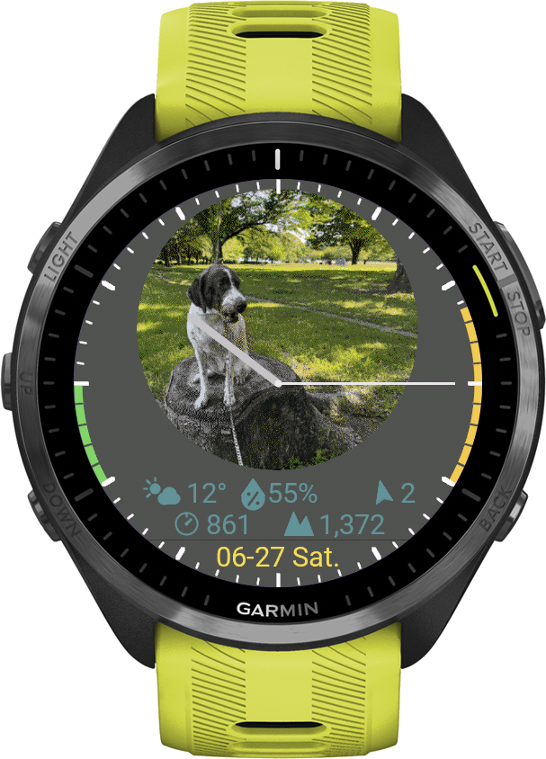
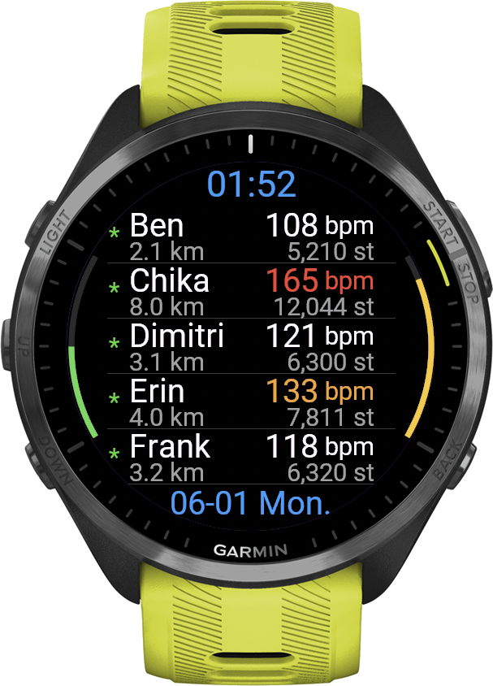

Pulse
Link
Stay together, and know everyone is safe. PulseLink puts each Crew member's direction and distance on a GPS compass radar on your Garmin wrist, with shared waypoints and an alert when someone drifts too far — plus live heart rate, steps and distance. Invite-only Crews of 2-8 people, up to 20 template messages, and a phone you leave behind can become a camera on your watch face. Joining a Crew is free.
Joining a Crew is free. Full version: 14-day free trial, then $9.99/year — no payment to start.


A watch face all day — a live group view the moment you run together
PulseLink lives on your wrist as a full watch face — clock, weather, your daily metrics, even a shared team image. The moment you and your friends head out, that same screen becomes a live view of everyone's heart rate, pace and distance. One app, two modes: a personal watch face when you're solo, a shared group view when you're together.
Clock styles your way
Choose analog Hands, minimalist Rim marks, or a Digital readout — and set your own background and clock colors. A real watch face you'll want on all day.
Your image, or the Crew's
Set a custom background image for your watch face. Whoever created the Crew can share one image with everyone, so the whole group wears the same look — and you can switch back to your own anytime.
Weather & ABC at a glance
A compact weather bar shows temperature, wind, pressure and altitude right on the face. Long-press to open a full compass with altimeter and barometer.
Daily body metrics
An optional physical bar surfaces your daily steps, calories and more — your body's numbers, woven right into the face.
Heat stress advisory
A personal heat-stress advisory estimates today's heat load (WBGT) from the weather and your own heart-rate reserve, with plain-language guidance. A guide only — not medical advice.
Rim meters
Slim meters along the edge keep an eye on Body Battery and stress, without cluttering the face.
A camera on your wrist
Turn a spare phone into a still camera and let its view become your watch face — a pet at home, the garden, the front door. A fresh photo every couple of minutes, stamped with the time it was taken, brightened automatically after dark. Watch it big on any phone or PC, adjust it remotely, or share it with your whole Crew.
Run together, even when apart
Garmin's LiveTrack and GroupTrack focus on routes. PulseLink focuses on the people — see your friends' pulse, pace and effort in real time, and cheer them on with template messages, all from your wrist.
Live Heart Rate
See each Member's current HR with a color-coded zone indicator. Privacy-friendly: each user can toggle HR sharing off independently.
Steps & Distance
Track each Member's daily steps and active distance. Compare effort across the group at a glance.
Location Radar
A GPS radar on the compass shows your Crew and saved waypoints around you — each with its bearing, distance and altitude difference, so you can place everyone even on a mountainside. Follow a big arrow to any target with Navigate to, get a stray alert when a Member drifts too far, and read out your exact coordinates for rescue. Location sharing is opt-in and off by default; positions are full-precision so you can actually find each other.
Weather Sharing
Optionally share your local conditions — temperature, humidity, wind direction, pressure and altitude — as a compact bar under your name. Opt-in per Member, pick your own bar color, and it refreshes automatically in the background.
Template Messages
Send pre-written cheers like 'Nice pace' or 'Hydrate' with one tap. Up to 20 customizable slots, addressed to everyone or one Member.
Invite-Only Crews
A private Crew is created with an 8-character invite code. New joins need approval, and there are kick and ban tools if you need them.
Adjustable Update Rate
The Crew's creator chooses how often it refreshes: 10s / 30s / 60s / 5min / 10min / Manual. Faster updates = more battery, slower = more endurance.
3-Layer Privacy Control
Set Manual interval (no auto-send), or switch off heart rate, steps and distance, weather or location one by one. You stay in control of what you share.
More than a running app — a way to stay connected
PulseLink isn't surveillance — it's a quiet way to stay connected with people you care about. Whether you're training with friends or keeping an eye on a loved one's daily walk, the Crew is private (invite-only) and every Member controls what they share.
Running Crew
Friends training apart on the same morning — share pace and effort in real time, cheer each other on with template messages. The classic use case.
Watching over family
An elderly parent on a daily walk, or a child on a school commute jog — family Members can quietly confirm "they're moving, heart rate looks normal" without a phone call. Especially useful when living apart.
Couples training apart
One partner at the gym, one out for a run — share each other's effort and finish times, exchange short messages, feel like training together even when apart.
Race day support
One person racing, friends cheering from home — non-racing Members can join the Crew as observers, see live HR and pace, send encouragement messages mid-race.
Health buddies
Two or three friends keeping each other accountable on daily walks or runs. Just opening the app and seeing "they're out there too" is enough motivation.
Privacy by design
Invite-only Crews (new joins need approval), per-user sharing toggles, Manual interval, ban/kick tools. You stay in control of who sees what.
Your watch is your identity
Every Garmin watch carries a Device ID, and PulseLink uses it to tell one watch from another. Install the app and you can start straight away. The same ID is what links your phone camera and your watch face images to your watch.
Your watch is your login
On the watch, open the You menu — the bottom line is Device ID, and your code is beside it. It never changes, even if you reinstall the app.
Watch face image
Enter that Device ID on the image page to send a picture to your watch face — a photo, a team logo, or any symbol you like.
Open image page →Phone camera
The same Device ID turns a spare phone into a fixed camera that feeds your watch face.
Open camera page →All web tools
One page listing every companion page — image, camera, viewer, and data deletion — with where to find your Device ID.
See all tools →A Crew of up to 8 people
Designed for small Crews. One person creates it, everyone else joins with a code, and all of you see each other in real time.
Someone Creates It
One person starts a trial or buys the full version, then creates a Crew. An 8-character invite code is generated automatically.
The Others Join
The others just install the app and enter the invite code. Each new request is approved from inside the Crew.
Start Running
Each watch sends HR / steps / distance on the chosen interval. The list updates live on every wrist.
Cheer Each Other
Tap a template message to send a cheer or warning, or address one person directly.
Joining is free — the full version adds the rest
If you just want to join a friend's or a family Crew and share your data with them, that stays free, with no time limit. The full version is for creating a Crew of your own, and for the camera and the place alerts.
- Everything in Free, plus:
- Create your own private Crew — up to 7 others
- Turn a spare phone into a camera on your watch face
- Watch and control that camera from any screen (Viewer)
- 5 watch face image slots
- Save 10 places on the radar
- Share your places with the whole Crew
- Arrive / leave alerts — your watch buzzes when someone in your Crew reaches or leaves a saved place
- Choose update interval (10s ~ 5min / Manual)
- Approve / kick / ban people who join
- Reset invite code anytime
- Join any Crew with an invite code
- Share your heart rate, steps and distance live
- See everyone on the compass radar
- Send template messages to anyone
- The full watch face — clock, weather, daily metrics
- 1 watch face image slot
- Save 1 place on the radar
- Privacy controls (Manual / HR off / Location off)
- Cannot create or run a Crew
- No phone camera, no Viewer
- Cannot share places with the Crew
The full version in 4 steps
None of this is needed to join a Crew. The 14-day free trial starts the first time you use a full-version feature; subscribe before it ends to keep them.
Find your Device ID
Open PulseLink on your watch and open the You menu. The bottom line is Device ID — an 8-character code like AB12-CD34, with your trial days or licence state beside it.
Subscribe
Tap Subscribe above, pay $9.99/year via Stripe, and enter your Garmin Device ID at checkout. An activation key is emailed to you instantly.
Enter the key
Garmin Connect IQ app → PulseLink → Settings → paste the key into the "License Key" field.
Restart
Save settings and restart PulseLink on your watch. The full version stays unlocked as long as your subscription is active.
Cancel anytime via the Stripe Customer Portal (link in your activation email and Stripe receipt). Access continues until the end of the current billing period.
36 Garmin watches supported
Compatible with AMOLED-class touch displays (360px and up) across Forerunner, fēnix 8, epix, Venu, Vivoactive, MARQ, D2 and Approach. Requires Connect IQ 4.2 or later.
How to activate
Subscribe
Complete payment via Stripe. Your activation email will be sent immediately.
Open the App
Open PulseLink on the watch. It identifies itself with its Device ID, so it is ready to use right away.
Customize Messages
Edit your 20 template messages from the same Settings screen. Empty slots are skipped on the watch.
Start Sharing
Save settings and restart PulseLink on your Garmin. Create a Crew of your own, or enter an invite code to join one.
Cancel anytime
Cancellation Policy: The PulseLink full version is an annual subscription that renews automatically. You can cancel anytime via the Stripe Customer Portal — link is included in your activation email and Stripe receipt. Your access continues until the end of the current billing period.
After cancellation or trial expiry, your watch returns to Member access — free, with no time limit. You keep the watch face, the radar, messages, one image slot and one saved place. The Crew you led closes: you leave it straight away, your Members keep using it for 48 more hours, and then it is deleted. Purchase at any time to lead a Crew again.
Refund Policy: As PulseLink is a digital service activated by a license key, refunds are not provided once the activation email has been sent. If you experience activation issues, please contact and we'll resolve them promptly.
For any questions:
Powered by Stripe
All payments are processed by Stripe — the same payment infrastructure trusted by the world's largest companies.
Card data never touches our servers
Your card details are entered directly on Stripe's secure checkout. Easymoat never sees, stores, or transmits your card information.
Trusted at scale
Stripe powers payments for 62% of Fortune 500 companies, and 80% of the largest US software companies — including Amazon, Google, and Microsoft.
Real-time fraud protection
Stripe Radar — Stripe's machine learning fraud detection — blocked $2.3 billion in fraudulent transactions in 2025 alone.
Cancel in seconds
Stripe's Customer Portal lets you cancel your subscription in just a few clicks. No phone calls, no hidden steps, no friction.
Privacy & Health Data
PulseLink processes heart rate data, which is treated as a special category of personal data under GDPR. We collect only what is necessary: your watch's Device ID, a nickname, and the metrics you choose to share within your Crew.
You can switch to Manual interval (no auto-send) at any time, or turn off just heart rate sharing while keeping steps and distance active. You can erase everything stored for your watch at any time from the Delete my data page.
For full details, please read our Privacy Policy and Terms of Service.